Vista Web del sitio público (desktop)
Panorama completo de la versión Web (desktop) del sitio público Facil. Las páginas dedicadas (51-58) cubren cada función en detalle con un enfoque mobile-first ; esta página agrupa las capturas Web desktop para tener una visión global del recorrido del visitante en navegador.
1. Acceder al sitio web
Abra https://taxasge.emacsah.com/ en cualquier navegador moderno (Chrome, Firefox, Safari, Edge). El sitio se redirige automáticamente al idioma de su navegador (ES por defecto). El header global con menú de navegación es presente en todas las páginas: Servicios, Licencias, Directorio, Ministerios, Calculadora, Guía, Asistente IA, además del selector de idioma y el botón «Iniciar sesión».
2. Homepage (página de inicio)
La homepage acoge al visitante con un hero verde «Simplifica tus trámites», un badge «Trámites Digitales AI de Guinea Ecuatorial» y una barra de búsqueda principal. Debajo, 3 cards clave (Calculadora, Documentos, Guía).
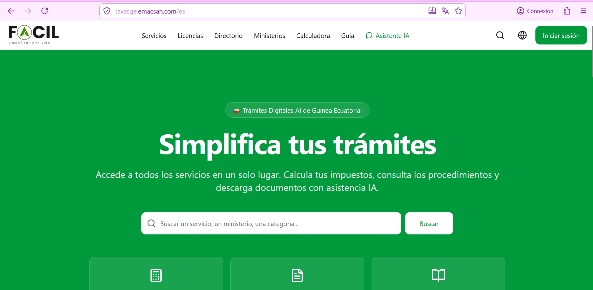
taxasge.emacsah.com/es — header con nav (Servicios, Licencias, Directorio, Ministerios, Calculadora, Guía, Asistente IA), hero verde con eslogan + barra de búsqueda + 3 cards de acceso rápido.Footer + widget chat flotante
Al desplazarse hacia abajo, encuentra una grilla de servicios tarifados (legalización 1/8 página, tarifas variables) y el footer con enlaces rápidos (Servicios / Legal). Un widget flotante «Asistente Facil – En línea» (esquina inferior derecha) se abre permanentemente para preguntas rápidas.
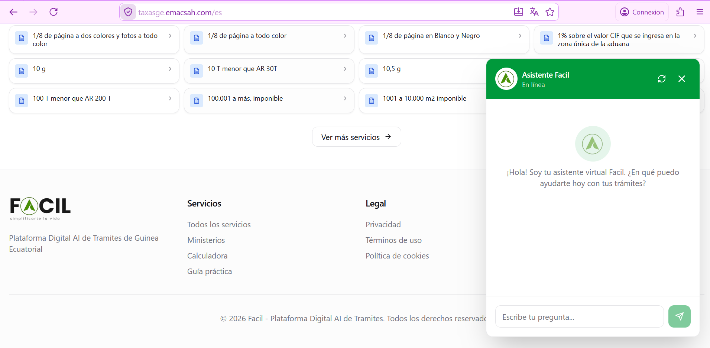
3. Catálogo de Servicios Fiscales
URL /es/services. Título «Servicios Fiscales – 869 servicios encontrados». Toggle Cuadrícula / Lista, 4 dropdowns de filtros (sector, ministerio, tipo, ordre) + barra de búsqueda. Cada card muestra el título del servicio, su tarifa en XAF, y la entidad gestora.
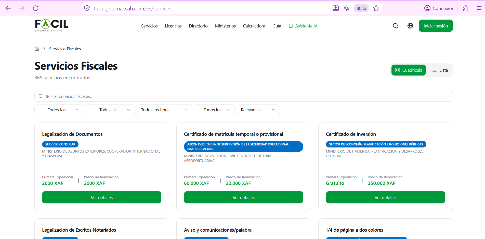
Detalle de un servicio
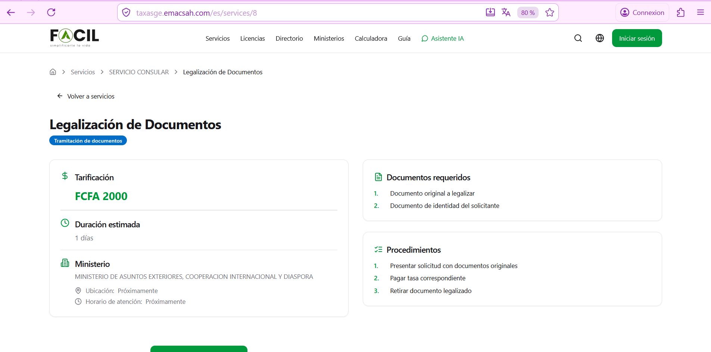
/es/services/8) — «Legalización de Documentos», tarifa 2 000 XAF, plazo 1 día, ministerio MAE/Diáspora. Cards «Documentos requeridos» (2) + «Procedimientos» (3 etapas).Para más detalles funcionales (filtros, búsqueda por palabra clave, comparación de servicios), consulte la página dedicada Explorar servicios.
4. Calculadora de Impuestos
URL /es/calculateur. 4 pestañas: IRPF, IVA, Sociedades, Servicios Fiscales. Saisie del monto en XAF + visualización de los tramos progresivos + resultado calculado en tiempo real.
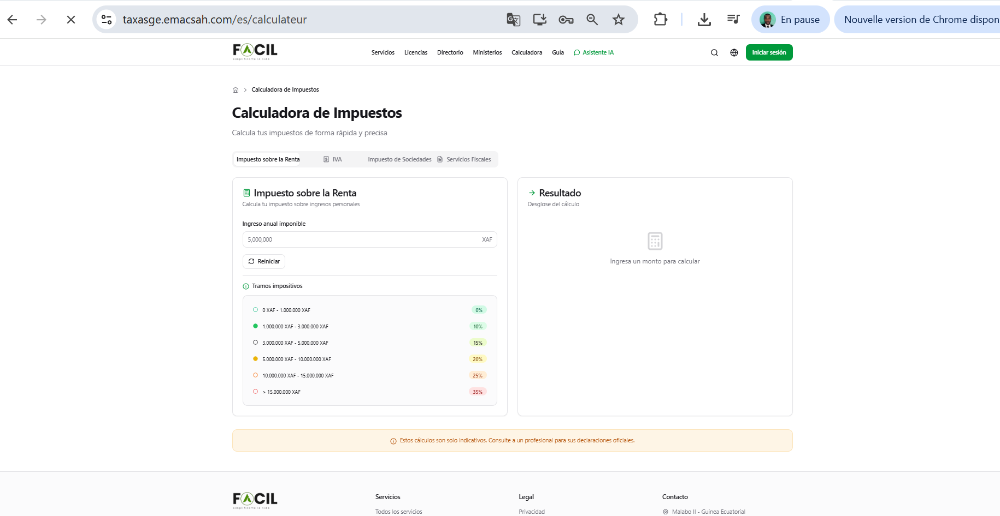
Detalles de las fórmulas y reglas en la página Calculadora fiscal.
5. Directorio de Empresas
URL /es/annuaire. Listado público de empresas registradas con búsqueda + filtros por sector y forma jurídica (S.L., Autónomo, S.A., ONG). Cada card muestra NIF, sector, ciudad, badge tier.
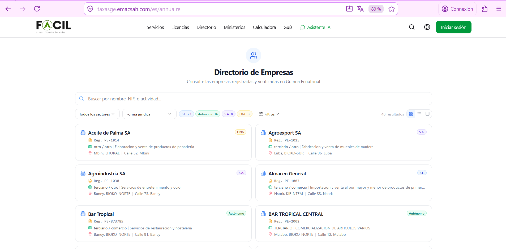
Más detalles en la página Directorio de empresas.
6. Simulador de Licencias Comerciales
URL /es/licencias-comerciales. Wizard de 3 etapas con stepper visible siempre. La versión web muestra una grilla iconada de los tipos de comercio (más visual que móvil).
Etapa 1 — Tipo de Comercio
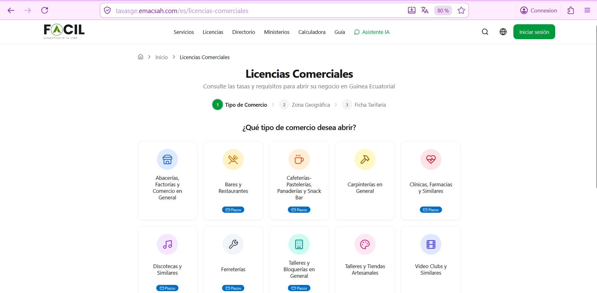
Etapa 2 — Zona Geográfica
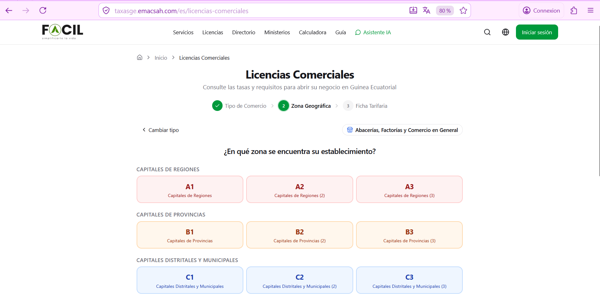
Etapa 3 — Ficha Tarifaria
Resultado completo con desglose detallado por entidad emisora, total general, documentos requeridos y botón «Imprimir» para generar un PDF oficial.
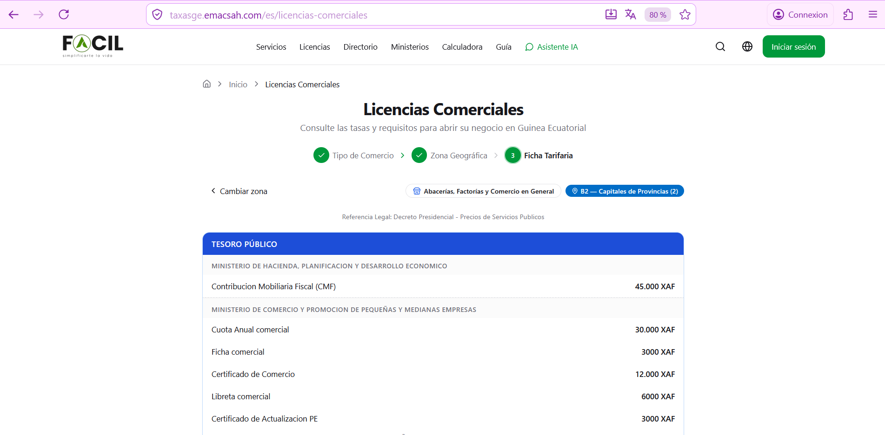
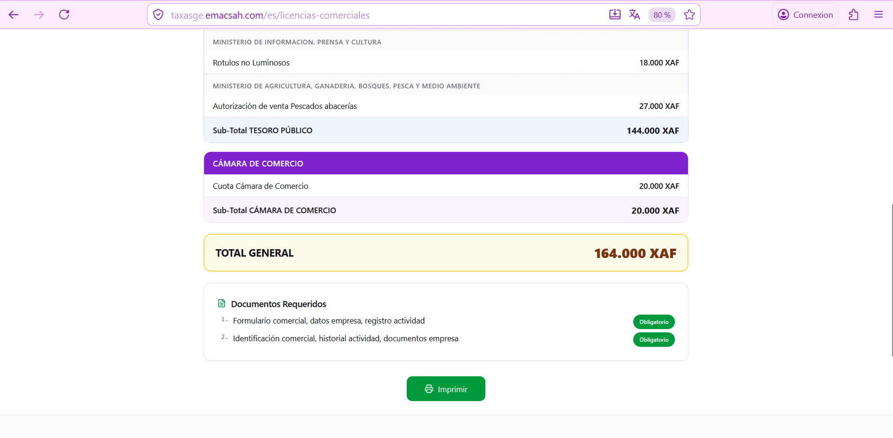
Generación e impresión del PDF
El botón «Imprimir» abre el dialog nativo del navegador (Chrome aquí). Puede elegir «Enregistrer au format PDF» para guardar el documento en su computadora antes de presentarlo a la administración.
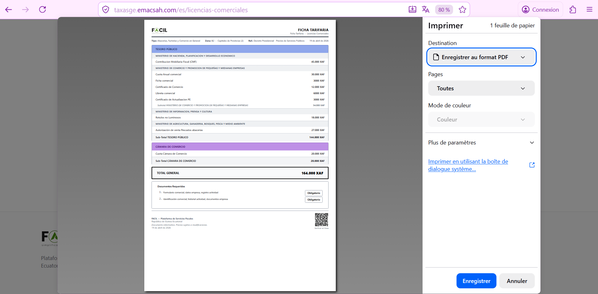
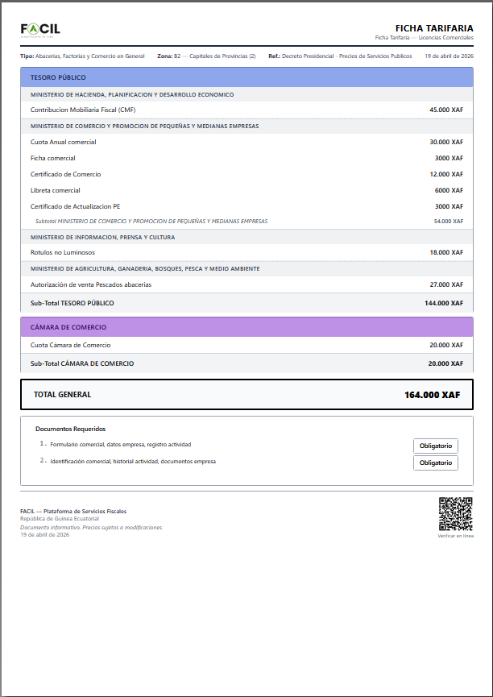
Para los detalles del cálculo y los tipos de comercio, consulte la página Simulador de licencias.
7. Asistente IA — modo chat completo + widget flotante
El asistente IA está accesible de 2 maneras en la versión Web:
Modo full-page (URL dedicada)
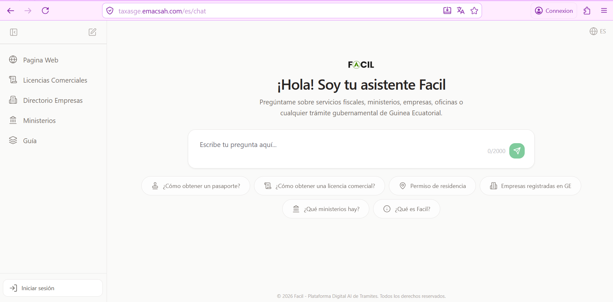
/es/chat — sidebar gauche (Página Web, Licencias Comerciales, Directorio Empresas, Ministerios, Guía, Iniciar sesión), título «¡Hola! Soy tu asistente Facil», input chat 0/2000 chars, 5 quick-prompts (pasaporte, licencia comercial, residencia, empresas registradas, ministerios, ¿Qué es Facil?).Modo widget flotante (en cualquier página)
En cualquier página del sitio (homepage, catálogo, etc.), un widget flotante en la esquina inferior derecha permite abrir el asistente sin abandonar la navegación actual. Útil para preguntas contextuales mientras explora un servicio.
Consulte la imagen 2.png de la sección 2 «Homepage» para ver el widget flotante en acción.
Más detalles funcionales en la página Asistente IA público.
8. Guía Fiscal — recursos y formularios
URL /es/guide. 4 pestañas: Declaración, Legislación, Descargas, FAQ. La versión Web ofrece una experiencia más rica que la móvil con preview integrado de los PDFs.
Pestaña Declaración
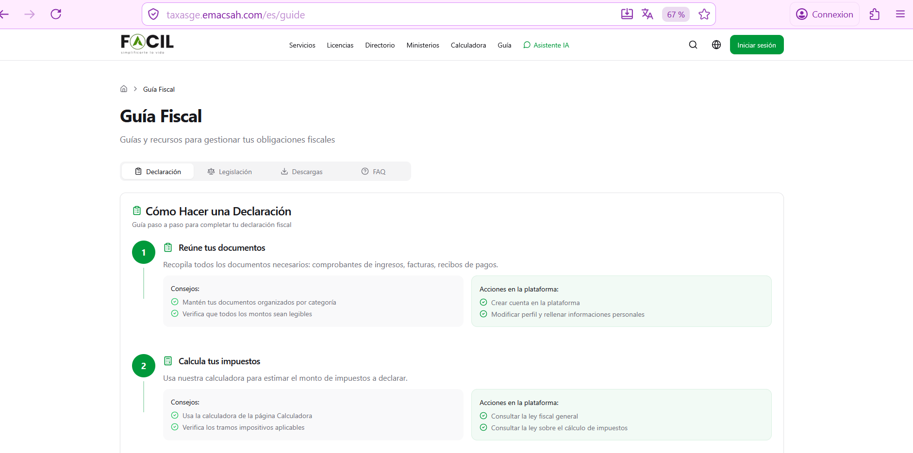
Pestaña Descargas (con preview PDF)
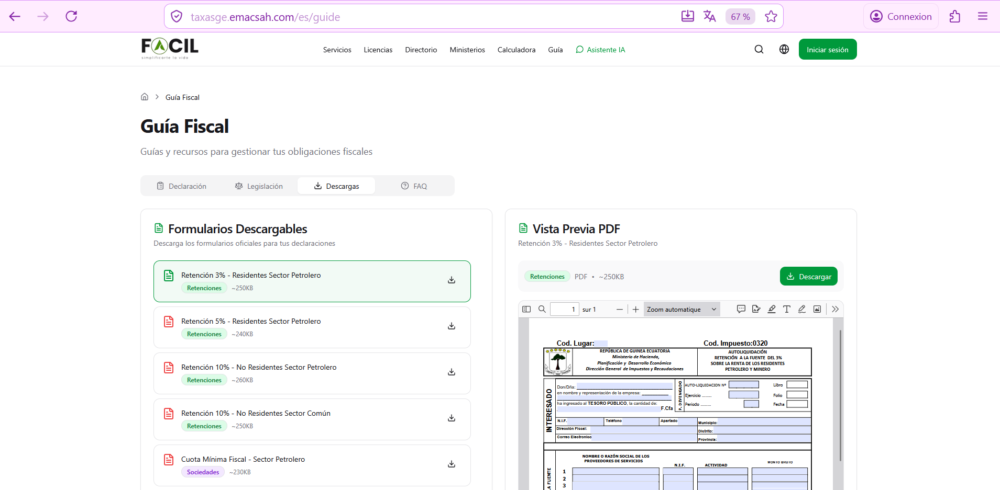
Detalles de cada pestaña en la página Guía rápida.
9. Catálogo de Ministerios
URL /es/ministere. Vista panorámica de los 21 ministerios de Guinea Ecuatorial con sus servicios fiscales asociados. Toggle Kanban / Lista. Cada card ministerio muestra el número de servicios disponibles.
Vista catálogo
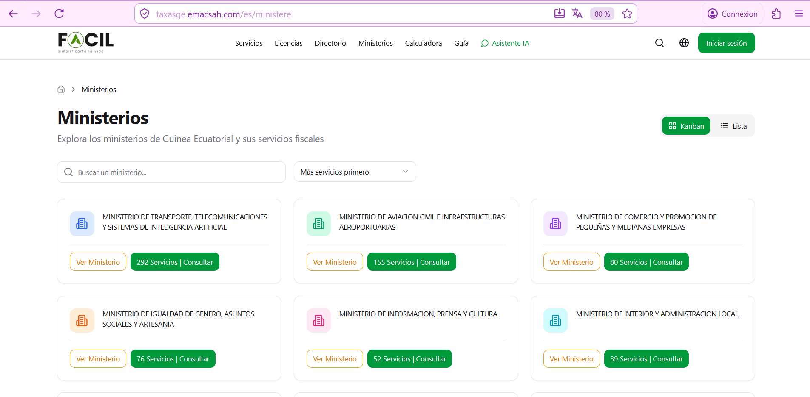
Detalle de un ministerio
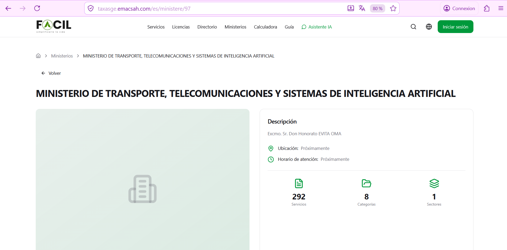
/es/ministere/97) — «MINISTERIO DE TRANSPORTE, TELECOMUNICACIONES Y SISTEMAS DE INTELIGENCIA ARTIFICIAL», descripción institucional, 3 stats (292 servicios, 8 categorías, 1 sectores).10. Diferencias Web vs Móvil
| Característica | Web (desktop) | Móvil |
|---|---|---|
| Header con menú permanente | ✅ 7 enlaces visibles | Menú hamburguesa |
| Asistente IA | Modo full-page + widget flotante | Pantalla dedicada solamente |
| Catálogo de Ministerios | ✅ Kanban + Lista | Lista solamente |
| Preview PDF de formularios | ✅ Iframe inline (Guía) | ❌ (descarga directa) |
| Generación PDF Ficha Tarifaria | Dialog Chrome native | Compartir nativo (WhatsApp...) |
| Vista cuadrícula vs lista | ✅ Toggle disponible | Auto-adapta según tamaño |